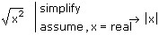
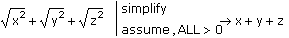

Making Assumptions About Variables |
To make assumptions about the domain of a variable in a symbolic expression, such as restricting it to be a real number, place the cursor at the end of the line containing the expression and either:
- or -
In the placeholder that appears after "assume," type a modifying expression specifying the assumption on the variable(s).
Then press [Enter].
If you insert "assume" after another keyword, the assumption on the variables applies to the operation performed by first keyword.
The following table lists the types of modifying expressions you can insert after "assume":
| Modifying Expressions | Assumption |
| x = real | x is a real number |
| x = integer | x is an integer |
| x > a | x is a real number greater than a |
| x ≥ a | x is a real number greater than or equal to a |
| x < b | x is a real number less than b |
| x ≤ b | x is a real number less than or equal to b |
| x = RealRange(a,b) | x is a real number in the range a < x < b, where a < b |
| n = even | n is an even integer. |
| n = odd | n is an odd integer. |
Use Boolean equals ([Ctrl] [=]) to specify the equalities in the preceding list.

| Restricting Multiple Variables |
To restrict the domain of more than one variable in the expression, insert a comma-separated list of modifying expressions after "assume." For example,
assume, x = real, y > 0, z > 0
To restrict the domain of all variables in the expression, insert the word "ALL" in the modifying expression. For example,

The keyword "assume" does not make an assignment or substitution. Use a variable definition or the keyword "substitute" for this purpose. To exclude or substitute numerically defined variables, use the keyword "explicit." The keyword "assume" merely constrains the region over which Mathcad finds a result, and is primarily useful for simplification and symbolic integration.